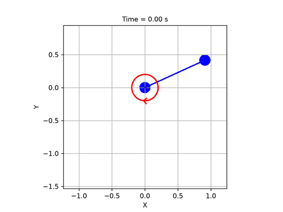
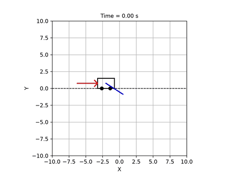
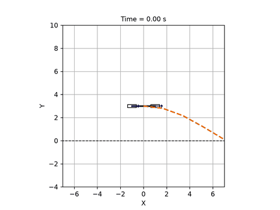
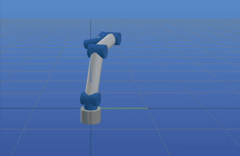
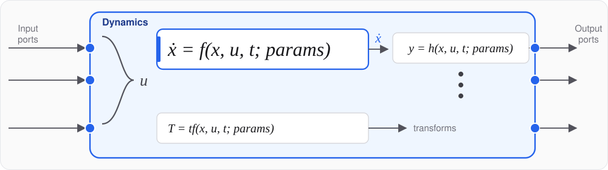
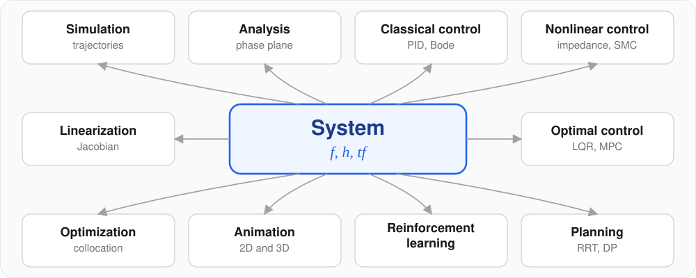

minilink
An open-source Python toolbox for dynamical systems and control. A model is a short class whose equations read like the textbook. Every tool in the library, from a Bode plot to model predictive control and reinforcement learning, takes that same model.

ImpedanceController() @ Pendulum()


1 · the contract

f, h and tf are functions of
(x, u, t; p) only: no hidden state on the object. That one convention is what lets a model compose
into diagrams, run in batches and differentiate later. The core needs NumPy, SciPy and Matplotlib.from minilink import ImpedanceController, Pendulum
plant = Pendulum()
plant.x0[0] = 2.0
plant.params["l"] = 5.0
diagram = ImpedanceController() @ plant
diagram.compute_trajectory(tf=10.0)
diagram.plot_diagram()
diagram.plot_trajectory()
diagram.animate()f and tf you getplant.game(): drive the plant from the keyboard, in real timea + b, source >> plant, ctl @ plant, a sampled controller with ctl % dt2 · one interface

| Simulate | plant.compute_trajectory(tf=10) |
| Frequency domain | plot_bode(plant, x_bar) · plot_root_locus(C >> G) |
| Classical loop | PID(Kp, Ki, Kd) @ plant |
| State feedback | lqr_at_operating_point(plant, x_bar, Q, R) @ plant |
| Robot control | ComputedTorqueController(arm) · JointImpedance(arm) |
| Value iteration | DynamicProgrammingPlanner(problem, x_grid=(101, 101)) |
| Sampling search | RRTPlanner(problem) |
| Trajectory optimization | TrajectoryOptimizationPlanner(problem) |
| Model predictive control | ModelPredictiveController(planner, dt_mpc=0.1) @ plant |
| Reinforcement learning | Sys2Gym(plant, cost) → Stable-Baselines3 |
| Identification | plant.jacobian("f", "params", x_bar) |
problem = PlanningProblem(
sys=plant, x_start=x_down, x_goal=x_up,
cost=QuadraticCost.from_system(plant, Q=Q, R=R, xbar=x_up),
tf=4.0,
)
DynamicProgrammingPlanner(problem).solve() # grid value iteration
RRTPlanner(problem).solve() # tree search
TrajectoryOptimizationPlanner(problem).solve() # collocationA PlanningProblem is a system, a cost and boundary sets. Every planner takes it and returns a
Trajectory; an optimizer sees a MathematicalProgram; a policy comes back as a
controller you close the loop with: planner.get_controller() @ plant.
f, so the
closed loop linearizes, animates and nests like a plant. Every wire is a named signal. A sampled controller is
ctl % dt with zero-order hold; the continuous plant is integrated between ticks.3 · differentiable
f is differentiable and compiledev = plant.compile(backend="jax") # one JIT-compiled evaluator
A = plant.jacobian("f", "x", x_bar) # exact linearization
S = plant.jacobian("f", "params", x_bar) # sensitivity to each parameter
xs = ev.rollout_batch( # a family of lengths, one call
x0s, n_steps=1000, dt=0.005,
params=dict(plant.params, l=lengths),
)
def loss(gains): # a closed-loop rollout, traced
xs = ev.rk4_integrate_zoh_trace_p(x0, U, 0.0, dt, {"ctl": gains})
return cost(xs)
gains = gains - lr * jax.grad(loss)(gains) # tune through the simulationMeasured with the showcase notebook cell on an Apple M4 Max laptop; your numbers will differ.
What is JAX?
An open-source library from Google for accelerated numerical computing, and the numerical core of much of Google DeepMind's machine-learning research. It keeps NumPy's array API and adds three function transformations:
jit: compiles a Python function to fast machine code for CPU, GPU or TPUgrad: exact derivatives of any function, by automatic differentiationvmap: runs one function over a whole batch, with no loopIn minilink it is an optional backend. The same f written with NumPy
semantics runs under JAX unchanged: plant.compile(backend="jax").
compile() lowers a leaf or a wired diagram to flat NumPy
or JAX primitives (f, rk4_step, rk4_integrate_zoh,
rollout_batch). The trace tier (f_trace, f_trace_p) is what you
differentiate inside your own jit; the jit tier is what simulators and planners call.4 · what it unlocks
One traced f, six things a plain simulator cannot do. Each one is a demo or a
notebook in the repository.
Gradient descent through the simulation: tune controller gains, identify physical parameters,
or train a neural-network controller block over batched closed-loop rollouts.
jax.grad of a cost built on rk4_integrate_zoh_trace_p.
demos/compile/neural_controller_jax.py · pid_autotuning_jax.py
vmap compiles one rollout into thousands: batches of initial states, sampled
disturbances, a family of parameters. Robustness statistics and sampling-based control at the
cost of one call.
ev.rollout_batch(x0s, params=family) · 1000 × 1000 steps in 27 ms
Exact Jacobians of the dynamics defects, jitted residuals, and a program re-solved at the
control rate with a warm start. The same planner runs offline and inside mpc @ plant.
TrajectoryOptimizationPlanner(problem, compile_backend="jax")
The Gymnasium environment's step is one jitted RK4 call on the compiled plant, so training loops spend their time in the agent, not in the simulator. Float32 mode for GPU workloads.
Sys2Gym(plant, cost) · MINILINK_JAX_X64=0
JAX places the compiled evaluator on an accelerator; nothing in the model changes. Large batches of rollouts, value-iteration sweeps and learning runs scale with the hardware.
the jax DP backend · batched rollouts · learning loops
A traced control block becomes a C function (float32), compiled and checked against Python to machine tolerance: the path from a diagram block to a microcontroller.
export_system_to_c(controller, "evaluate_controller") · examples/experimental/c_export/
Get started: showcase in Colab · JAX showcase · GitHub · documentation. Python 3.10+, MIT license; the core needs NumPy, SciPy and Matplotlib, JAX is optional.